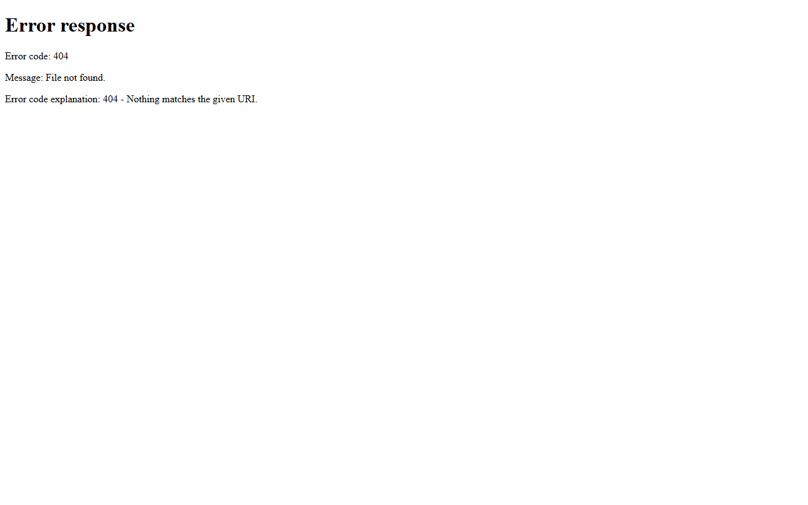

Web scrapers & carrier data
Playwright/Selenium pipelines and FMCSA SAFER extractors that turn websites into structured leads and datasets.

Who this is for
Freight brokers, dispatch marketers, agencies, and ops teams that need repeatable data extraction — not one-off copy/paste.
Playwright scrapers
Multi-page capture, screenshots, assets, anti-flake waits, exports.
FMCSA / SAFER
Carrier/MC lookups, phones, emails, addresses for logistics prospecting.
Lead pipelines
Queues, databases, Excel/CSV exports, scheduled runs.
Site clone toolkits
Audit/redesign captures with structured project output.
Proof
Remote worldwide · Freelance & contract · Built by Muhammad Afzal Kalwar (@mafzalkalwardev)
FAQ
Can you scrape a specific site for my business?
Usually yes — share the target, fields you need, and volume. I design ethical, maintainable scrapers with clear deliverables.
Do you build carrier directories?
Yes — searchable FMCSA-style directories and lead UIs like Indus Carrier Directory.